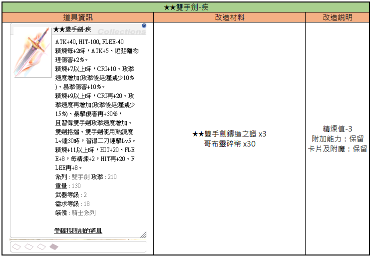
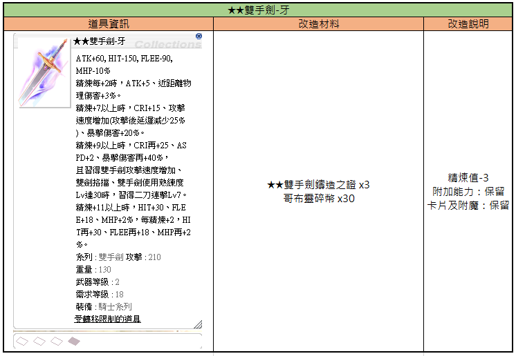
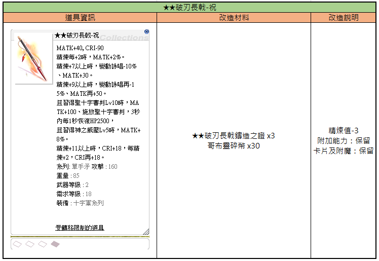
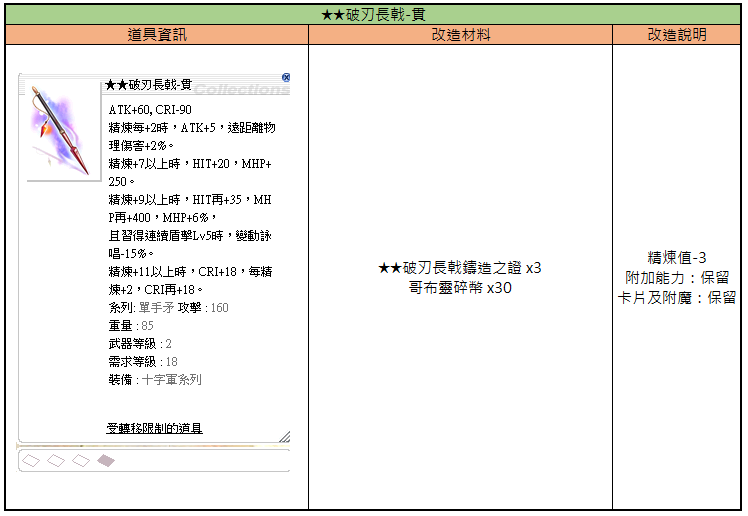
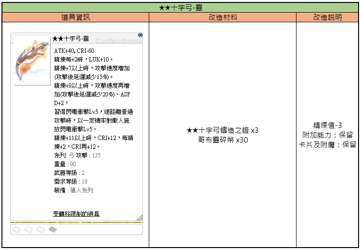
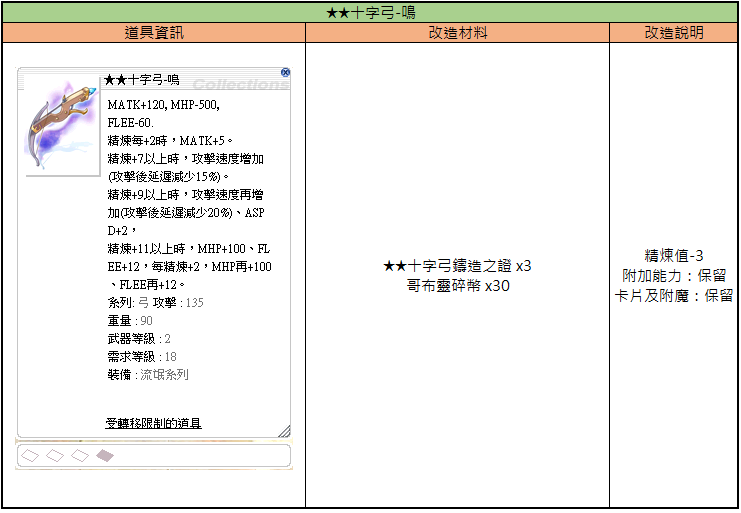
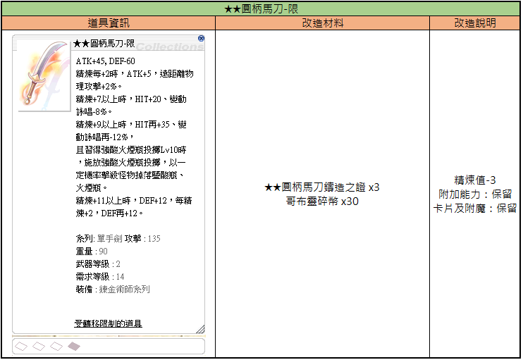
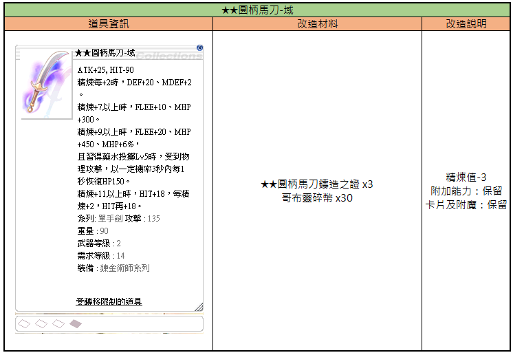
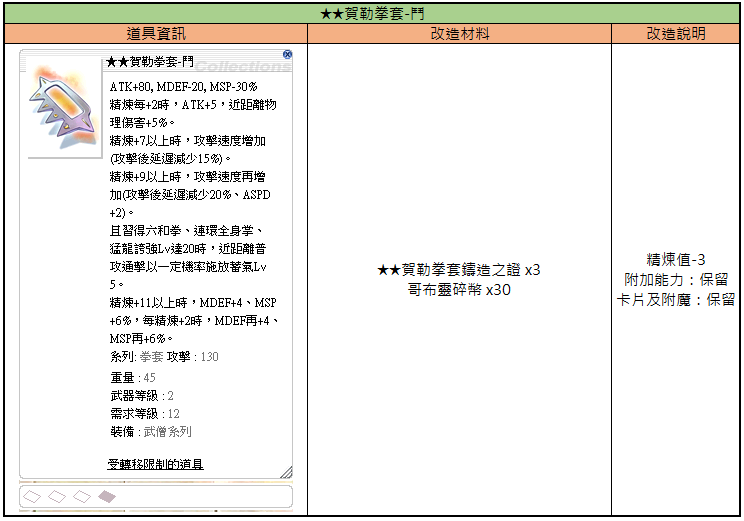
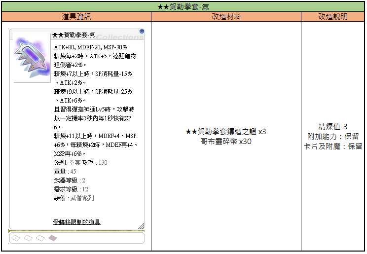

Tier-2 ★★-Waffen Aktivierung (二級★★武器活化)
Die zweite Activation-Stufe nach ★-Activation: Tier-2-Waffen werden auf ★★-Niveau gehoben, mit eigenen Varianten-Endungen wie -Swift, -Fang, -Bless.
⭐⭐ Worum geht's?
Nach der Basis-★-Activation führt ein weiterer Activation-Schritt zur ★★-Stufe. Jedes ★★-Modell trägt eine spezielle Varianten-Endung (z. B. ★★Two-Handed Sword-Swift), die sich in Stats und Random-Options-Pool unterscheidet.
📋 Offizielle ★★-Waffenliste (März 2026)
Der vollständige Stand nach den Updates von 23./24./31. März 2026:

Informationen über die Modifikationsanforderungen und Boni für das ★★Two-Handed Sword-Swift in Ragnarok Zero.
| Artikel-Informationen | Modifikationsmaterialien | Modifikationshinweise |
|---|---|---|
| ★★Two-Handed Sword-Swift: ATK+40, HIT-100, FLEE-40. Jede +2 Refine: ATK+5, Nahkampf-Schaden +2%. Bei Refine +7 oder höher: CRI+10, Angriffsgeschwindigkeit erhöht (nach dem Angriff Verzögerung um 10% verringert), Kritischer Schaden +10%. Bei Refine +9 oder höher: CRI+20, Angriffsgeschwindigkeit weiter erhöht (nach dem Angriff Verzögerung um 15% verringert), Kritischer Schaden +30%. Wenn Two-Handed Sword Quicken, Two-Handed Quicken und Sword Mastery auf Level 30 sind, lerne Double Strafe Lv5. Bei Refine +11 oder höher: HIT+20, FLEE+8; jede weitere +2 Refine: HIT+20, FLEE+8. Typ: Two-Handed Sword, ATK: 210, Gewicht: 130, Waffenlevel: 2, Benötigtes Level: 18, Ausrüstbar durch: Knight-Klasse. Item nicht handelbar. | ★★Two-Handed Sword Casting Certificate x3, Goblin Shard x30 | Refine-Wert: -3, Zusätzliche Fähigkeiten: Beibehalten, Karten und Enchants: Beibehalten |
Die Tabelle beschreibt die Modifikation des Gegenstandes ★★Two-Handed Sword-Swift, einschließlich der Kosten und der Beibehaltung von Upgrades/Cards.

Diese Tabelle zeigt die Gegenstandsinformationen und die erforderlichen Materialien für das Upgrade des ★★ Zweihandschwert - Zahn.
| Gegenstandsinformationen | Upgrade-Materialien | Upgrade-Beschreibung |
|---|---|---|
| ★★ Zweihandschwert - Zahn: ATK+60, HIT-150, FLEE-90, MHP-10%. Bei jedem Refine +2, ATK+5, Nahkampf-Schadensbonus +3%. Bei Refine +7 oder höher, CRI+15, Angriffsgeschwindigkeit erhöht (Nachverarbeitungsverzögerung -25%), Kritischer Schaden +20%. Bei Refine +9 oder höher, CRI+25, ASPD+2, Kritischer Schaden +40%; wenn Two-Handed Quicken, Two-Handed Sword Mastery Lv30 erlernt sind, erlerne Double Strafe Lv7. Bei Refine +11 oder höher, HIT+30, FLEE+18, MHP+2%, für jedes Refine +2, HIT+30, FLEE+18, MHP+2%. Typ: Zweihandschwert, ATK: 210, Gewicht: 130, Waffenlevel: 2, Benötigtes Level: 18, Ausrüstbar von: Knight-Klasse, Nicht handelbar. | ★★ Zweihandschwert-Schmiedezertifikat x3, Goblin Shard x30 | Refine -3, Zusatzeigenschaften: behalten, Karten und Verzauberungen: behalten |

Diese Tabelle beschreibt die Modifikationsanforderungen und Effekte für die Waffe **Brionac-Blessing in Ragnarok Zero.
| Item-Informationen | Modifikationsmaterialien | Modifikationsbeschreibung |
|---|---|---|
| **Brionac-Blessing MATK+40, CRI-90 Jede +2 Refine: MATK+2% Bei Refine +7 oder höher: Variable Cast Time -10%, MATK+30 Bei Refine +9 oder höher: Variable Cast Time zusätzlich -5%, MATK zusätzlich +50 Bei Grand Cross Lv10: MATK+100, nach Nutzung von Grand Cross für 3 Sekunden alle 1 Sekunde HP+2500 Bei Holy Blessing Lv5: MATK+8% Bei Refine +11 oder höher: CRI+18, jede +2 Refine: CRI zusätzlich +18 Typ: One-Handed Spear, ATK: 160 Gewicht: 85 Waffenstufe: 2 Benötigtes Level: 18 Ausrüstungsklasse: Crusader-Serie Handelsbeschränkter Gegenstand | **Brionac Forge Certificate x3 Goblin Shard x30 | Refine-Wert: -3 Zusatzfähigkeiten: Behalten Karten und Enchants: Behalten |
Die Werte beziehen sich auf das koreanische/taiwanische Ragnarok Zero Upgrade-System.

Tabelle mit den Details zur Aufwertung der Waffe 'Spear of Fate-Pierce', einschließlich der benötigten Materialien und der Auswirkungen auf die Statuswerte.
| Item-Informationen | Umwandlungsmaterialien | Umwandlungsdetails |
|---|---|---|
| **Spear of Fate-Pierce ATK+60, CRI-90 Jede Refine-Stufe +2: ATK+5, Fernkampf-Schaden +2% Ab Refine +7: HIT+20, MHP+250 Ab Refine +9: HIT zusätzlich +35, MHP zusätzlich +400, MHP+6%, und bei erlerntem Shield Chain Lv5, Variable Cast Time -15% Ab Refine +11: CRI+18, jede Refine-Stufe +2, CRI zusätzlich +18 Typ: One-Handed Spear, ATK: 160 Gewicht: 85 Waffen-Level: 2 Benötigtes Level: 18 Klasse: Crusader-Reihe Handelsbeschränkung: Item kann nicht gehandelt werden | **Spear of Fate-Pierce Casting Certificate x3 Goblin Shard x30 | Refine-Wert -3 Zusätzliche Fähigkeiten: Beibehalten Karten & Enchants: Beibehalten |
Die Werte beziehen sich auf die Modifikation der 'Spear of Fate-Pierce' innerhalb des Spiels Ragnarok Zero.

Diese Tabelle zeigt die notwendigen Materialien und Effekte für die Aufwertung der ★★ Cross Bow-Spirit Waffe.
| Item-Informationen | Umbau-Materialien | Umbau-Beschreibung |
|---|---|---|
| ★★ Cross Bow-Spirit ATK+40, CRI-60 Bei jedem Refine+2, LUK+10. Bei Refine+7 oder höher, Angriffsgeschwindigkeit erhöht (Nach-Angriffs-Verzögerung -15%). Bei Refine+9 oder höher, Angriffsgeschwindigkeit weiter erhöht (Nach-Angriffs-Verzögerung -20%), ASPD+2. Wenn Lightning Bolt Lv5 erlernt wurde, Chance bei Fernkampf-Standardangriffen Lightning Bolt Lv5 auf den Gegner zu wirken. Bei Refine+11 oder höher, CRI+12, pro Refine+2, CRI zusätzlich +12. Typ: Bogen ATK: 135 Gewicht: 90 Waffen-Level: 2 Benötigtes Level: 18 Ausrüstbar von: Archer-Klasse Nicht handelbarer Gegenstand | ★★ Cross Bow Forging Certificate x3 Goblin Shard x30 | Refine-Wert -3 Zusätzliche Fähigkeiten: Beibehalten Karten und Enchants: Beibehalten |

Die Tabelle zeigt die detaillierten Informationen, benötigten Materialien und Modifikationsbedingungen für das Upgrade der Waffe **Cross Bow-Song**.
| Item-Informationen | Upgrade-Materialien | Upgrade-Beschreibung |
|---|---|---|
| **Cross Bow-Song MATK+120, MHP-500, FLEE-60. Refine +2: MATK+5. Refine +7: ASPD erhöht (Nach-Angriffs-Verzögerung -15%). Refine +9: ASPD weiter erhöht (Nach-Angriffs-Verzögerung -20%), ASPD+2. Refine +11: MHP+100, FLEE+12; pro Refine +2, MHP+100, FLEE+12. Typ: Bow, ATK: 135 Gewicht: 90 Waffen-Level: 2 Benötigtes Level: 18 Klasse: Rogue-Serie Handelsbeschränkung: Item kann nicht gehandelt werden | **Cross Bow Forging Proof x3 Goblin Shard x30 | Refine-Wert -3 Zusätzliche Effekte: Beibehalten Karten & Enchants: Beibehalten |
Die im Spiel angezeigten Texte wurden aus dem Chinesischen übersetzt und teilweise durch offizielle RO-Terminologie ersetzt.

Diese Tabelle zeigt die Gegenstandsinformationen, die für die Modifikation der ★★ Round Sword-Limit Waffe erforderlichen Materialien und die Auswirkungen des Upgrades.
| Gegenstandsinformationen | Modifikationsmaterialien | Modifikationsbeschreibung |
|---|---|---|
| ★★ Round Sword-Limit: ATK+45, DEF-60. Bei jedem Refine+2: ATK+5, Fernkampf-Physischer Schaden +2%. Ab Refine+7: HIT+20, Variable Zauberzeit -8%. Ab Refine+9: HIT+35, Variable Zauberzeit -12% zusätzlich. Wenn Acid Terror auf Lv10 gelernt ist, besteht beim Einsatz eine Chance, dass Monster Acid Bottle oder Bottle Grenade fallen lassen. Ab Refine+11: DEF+12, bei jedem weiteren Refine+2: DEF+12 zusätzlich. Typ: Einhand-Schwert, ATK: 135, Gewicht: 90, Waffen-Level: 2, Benötigtes Level: 14, Ausrüstbar für: Alchemist-Klasse. Item nicht handelbar. | ★★ Round Sword Forging Certificate x3, Goblin Shard x30 | Refine-Wert -3. Zusätzliche Eigenschaften: Behalten. Karten und Enchants: Behalten. |
Die Werte in der Spalte 'Modifikationsbeschreibung' geben an, wie der Gegenstand nach der Modifikation beeinflusst wird.

Diese Tabelle zeigt die Eigenschaften der Waffe '**Round Handle Sword-Domain' sowie die Anforderungen und Konsequenzen einer Modifikation/Aufwertung.
| Item-Informationen | Modifikationsmaterialien | Modifikationshinweise |
|---|---|---|
| **Round Handle Sword-Domain ATK+25, HIT-90 Bei jedem Refine+2, DEF+20, MDEF+2 Bei Refine+7 oder höher, FLEE+10, MHP+300 Bei Refine+9 oder höher, FLEE+20, MHP+450, MHP+6% Wenn Potion Pitcher Lv5 erlernt, bei physischen Angriffen Chance, 3 Sekunden lang jede Sekunde HP+150 wiederherzustellen Bei Refine+11 oder höher, HIT+18, bei jedem weiteren Refine+2, zusätzlich HIT+18 Klasse: Einhand-Schwert, ATK: 135 Gewicht: 90 Waffen-Level: 2 Benötigtes Level: 14 Klasse: Alchemist-Klasse Nicht handelbarer Gegenstand | **Round Handle Sword Forging Certificate x3 Goblin Shard x30 | Refine-Wert: -3 Zusätzliche Fähigkeiten: Beibehalten Karten und Verzauberungen: Beibehalten |

Diese Tabelle zeigt die Item-Informationen, erforderlichen Materialien und die Modifikationsdetails für die Aufwertung der Herugra Knuckles-Gate.
| Item-Informationen | Umwandlungsmaterialien | Umwandlungsdetails |
|---|---|---|
| ** Herugra Knuckles-Gate ATK+80, MDEF-20, MSP-30% Refine +2: ATK+5, Close-range Physical Damage +5% Refine +7 or higher: Attack Speed increase (After-attack delay -15%) Refine +9 or higher: Attack Speed further increase (After-attack delay -20%, ASPD +2) If Chain Combo Lv.20, Combo Finish Lv.20, and Force Blast Lv.20 are learned, close-range normal attacks have a chance to trigger Energy Gain Lv.5 Refine +11 or higher: MDEF+4, MSP+6%; every +2 Refine, MDEF+4, MSP+6% Type: Knuckle, ATK: 130 Weight: 45 Weapon Level: 2 Required Level: 12 Job: Monk Class Item bound to character | ** Herugra Knuckles Crafting Certificate x3 Goblin Shard x30 | Refine value -3 Bonus abilities: Retained Cards and Enchantments: Retained |
Die Werte spiegeln die spezifischen Anforderungen für das Modifikationssystem von Ragnarok Zero wider.

Diese Tabelle beschreibt die Aufwertungsinformationen für die Waffe 'Gale Fist - Ki', einschließlich der benötigten Materialien und der Modifikationseffekte.
| Item-Informationen | Aufwertungsmaterialien | Aufwertungsbeschreibung |
|---|---|---|
| ★★ Gale Fist - Ki ATK+80, MDEF-20, MSP-30% Bei jedem Refine +2, ATK+5, Fernkampf-Schaden +2%. Bei Refine +7 oder höher, SP-Verbrauch -15%, ATK+2%. Bei Refine +9 oder höher, SP-Verbrauch -25%, ATK+6%. Bei erlerntem Finger Offensive Lv5, Chance bei Angriff, für 3 Sek. alle 1 Sek. SP 6 wiederherzustellen. Bei Refine +11 oder höher, MDEF+4, MSP+6%, bei jedem weiteren Refine +2, zusätzlich MDEF+4, MSP+6%. Typ: Knuckle, ATK: 130 Gewicht: 45 Waffen-Level: 2 Benötigtes Level: 12 Klasse: Monk-Reihe Handelsbeschränkter Gegenstand | ★★ Gale Fist-Ki Casting Certificate x3 Goblin Shard x30 | Refine -3 Zusätzliche Fähigkeiten: Beibehalten Karten & Enchants: Beibehalten |
Die Werte beziehen sich auf die Modifikation der 'Gale Fist - Ki' in Ragnarok Zero.
🧪 Verwendbare Enchant-Items
💡 Praxis-Tipps
- Variante wählen: Die Endungen (-Swift, -Fang, -Bless, -Pierce, -Limit, -Domain, -Fighter, -Chi, -Spirit, -Roar) unterscheiden sich in Build-Fokus — Entscheidung treffen vor der Aktivierung
- ★★ ist Endgame: Braucht viel Material — erst ansteuern, wenn ★-Waffen bereits solide gerollt sind
- Patch-Monitoring: Die Liste wurde im März 2026 mehrfach erweitert; zusätzliche Varianten könnten folgen
⚠️ Hinweise
- Items & Bonuswerte richten sich nach den In-Game-Einstellungen.
- Änderungen oder Ergänzungen stets auf der Originalseite prüfen.